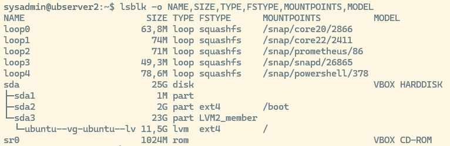

Monitorización de Sistemas Linux
1 PRACTICA
1.1 Requisitos previos
Una máquina con Ubuntu Server 26.04.
Acceso con un usuario con permisos sudo.
Conexión a Internet para instalar paquetes.
Una terminal local o conexión SSH.
Al menos 2 GB de RAM recomendados para realizar las pruebas con comodidad.
1.2 Normas de seguridad
No ejecutar esta práctica en un servidor de producción real.
No detener servicios críticos.
No matar procesos desconocidos.
No modificar configuraciones permanentes salvo que se indique.
No borrar logs del sistema.
No ejecutar pruebas de carga durante más tiempo del indicado.
No cambiar permisos de archivos del sistema.
No ejecutar comandos destructivos como rm -rf /, mkfs, dd sobre discos reales o similares.
1.3 Estado general del sistema
1.3.1 Ver tiempo encendido y carga media
Comando: uptime Muestra la hora actual, el tiempo que lleva encendido el sistema y los usuarios conectados. Los tres valores finales son la carga media del sistema en 1, 5 y 15 minutos.
12:17:07 up 2:48, 2 users, load average: 0,00, 0,02, 0,001.3.2 Ver uso de memoria
Comando: free -h Muestra la memoria RAM y swap en formato legible.
El dato más útil suele ser available, porque indica una estimación de la memoria disponible para nuevas aplicaciones sin recurrir a swap.

1.3.3 Ver espacio en disco
Comando: df -hT Muestra el espacio usado y libre de los sistemas de archivos montados. -h: muestra tamaños en formato legible. -T: muestra el tipo de sistema de archivos.

1.3.4 Ver discos y particiones
Comando: lsblk -o [nombres de columnas a mostrar] ejemplo lsblk -o NAME,SIZE,TYPE,FSTYPE,MOUNTPOINTS,MODEL
Nos fijaremos en el resultado del arbol sda, vda, nvme0n1 o similares

Ver direcciones de red
Comando: ip -br a Muestra las interfaces de red y sus direcciones IP de forma resumida.

Qué significa enp0s3 :El nombre se divide en partes:
e → Ethernet
n → Network
p0 → está en el bus PCI número 0
s3 → es el slot 3 dentro de ese bus
En resumen: enp0s3 = interfaz Ethernet en el bus PCI 0, slot 3
1.4 Monitorización en tiempo real con top
Comando: top Muestra una vista dinámica del sistema:
Carga media.
Número de tareas.
Uso de CPU.
Uso de memoria.
Procesos en ejecución.
Procesos que más recursos consumen.
 Dentro de top:
Dentro de top:
p Ordena por uso de CPU.
m Ordena por uso de memoria.
q Sale de top.
Ejecutar top en modo no interactivo:
Comando: top -b -n 1 | head -n 20 Las opciones significan:
-b: modo batch, útil para guardar o mostrar salida en terminal.
-n 1: toma una sola muestra.
head -n 20: muestra solo las primeras 20 líneas, por defecto ordenadas por PID

Para ordenar por columnas determinadas y conseguir así los procesos que más recursos están usando:
Ordenar por:
CPU:
top -b -o %CPU -n 1 | head -n 20Memoria:
top -b -o %MEM -n 1 | head -n 20tiempo acumulado de CPU:
top -b -o TIME+ -n 1 | head -n 20
Explicación de la cabecera.
top - 13:14:26 up 3:45, 2 users, load average: 0,00, 0,01, 0,0013:14:26 → hora actual del sistema.
up 3:45 → tiempo que lleva encendido el sistema (3 horas y 45 minutos).
2 users → número de usuarios conectados (por consola o SSH).
load average → carga media del sistema en los últimos 1, 5 y 15 minutos.
Valores bajos (como 0,00) indican que el sistema está ocioso.
Si el número se acerca al número de núcleos de CPU, el sistema está ocupado.
Tasks: 147 total, 1 running, 146 sleeping, 0 stopped, 0 zombietotal → número total de procesos.
running → procesos activos usando CPU.
sleeping → procesos en espera (la mayoría del tiempo).
stopped → procesos detenidos manualmente.
zombie → procesos “muertos” que aún ocupan una entrada en la tabla de procesos (debería ser 0).
%Cpu(s): 0,0 us, 0,2 sy, 0,0 ni, 98,2 id, 0,0 wa, 0,0 hi, 1,6 si, 0,0 stus → porcentaje de CPU usado por procesos de usuario.
sy → porcentaje usado por procesos del sistema (kernel).
ni → procesos con prioridad modificada (nice).
id → CPU inactiva (idle).
wa → tiempo esperando operaciones de E/S (disco, red).
hi → interrupciones de hardware.
si → interrupciones de software.
st → tiempo “robado” por el hypervisor (solo en máquinas virtuales).
MiB Mem : 3398,1 total, 2294,5 free, 511,6 used, 817,1 buff/cache total → memoria física total.
free → memoria libre sin usar.
used → memoria usada por procesos.
buff/cache → memoria usada por buffers y caché del sistema (se libera si hace falta).
MiB Swap: 2079,0 total, 2079,0 free, 0,0 used. 2886,6 avail Memtotal → tamaño total del espacio swap.
free → swap libre.
used → swap usada (0,0 → no se está usando).
avail Mem → memoria disponible para nuevos procesos (RAM libre + caché reutilizable).